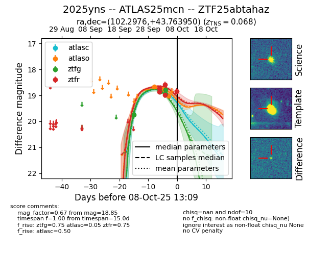
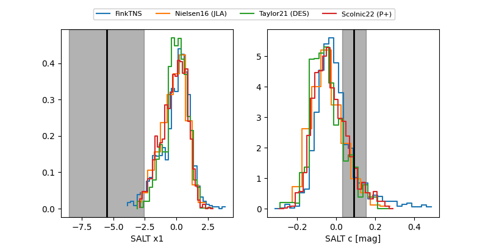

FINK: ZTF25abtahaz
Lasair: ZTF25abtahaz
ALeRCE: ZTF25abtahaz
TNS: 2025yns
YSE: 2025yns
ZTF25abtahaz (ztf,fink)
2025yns (tns,yse)
ATLAS25mcn (atlas)
equatorial (ra, dec) = (102.2976,+43.76395)
galactic (l, b) = (172.3384,+18.00476)


last atlasc=18.84, atlaso=19.02, ztfg=18.93, ztfr=18.85
1 atlasc, 3 atlaso, 5 ztfg, 5 ztfr detections